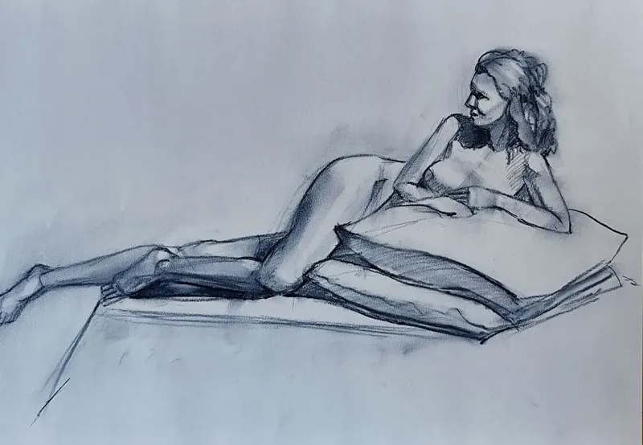

Йога с Сандрой Лейфер: практика и занятия
Йога — это практика, которая соединяет движение, дыхание и внимание к телу. У Сандры Лейфер есть опыт в нескольких видах йоги, и она проводит занятия по йоге. Здесь коротко о практике и о том, как с ней связаться.
Написать Сандре в WhatsAppНейрографика с Сандрой
Сандра Лейфер — художница и преподаватель изобразительного искусства. В её биографии на сайте среди направлений названа и йога-терапия.

Что такое йога
Йога — древняя практика родом из Индии. В современных занятиях её чаще всего представляют как сочетание поз (асан), дыхания и расслабления, а иногда и медитации.
Разные стили по-разному расставляют акценты: где-то больше плавного движения, где-то долгие удержания поз, где-то спокойное восстановление. Поэтому важно подобрать практику под себя.
Йога — это практика, а не медицинская процедура. При проблемах со здоровьем, травмах или беременности перед занятиями стоит посоветоваться с врачом.
Какие бывают стили йоги
Это общий обзор стилей йоги, а не список того, что преподаёт Сандра. Какие именно направления и в каком формате она ведёт, уточняйте у неё лично в WhatsApp.
Хатха-йога
Общее название практик с позами и дыханием. Обычно спокойный темп и внимание к тому, как выполняется каждая поза.
Виньяса-йога
Позы соединены в плавную последовательность, а движение связано с дыханием.
Инь-йога
Медленная практика: пассивные позы удерживают долго, на расслаблении.
Восстановительная йога
Мягкая практика с опорами (подушки, болстеры, одеяла) и акцентом на отдыхе.
Йога-терапия
Йога, подобранная под потребности конкретного человека. Не заменяет медицинскую помощь.
Как обычно проходит занятие йогой
Обычно занятие включает разогрев, позы, дыхательные упражнения и финальное расслабление. Нужны коврик и удобная одежда.
Формат занятий с Сандрой, место, язык и время обсуждаются лично: напишите ей в WhatsApp.
Йога и творчество
Сандра развивает собственный метод группового творческого самоисследования, в котором соединяются движение, дыхание, жест, художественная импровизация и НейроГрафика. Если вам близок этот сплав телесной практики и рисования, посмотрите страницу о нейрографике.

Кто ведёт: Сандра Лейфер
- Есть опыт в нескольких видах йоги, проводит занятия по йоге.
- В биографии на сайте среди направлений названа йога-терапия.
- Художница и преподаватель изобразительного искусства с опытом более 20 лет.
- Живёт и работает в Израиле.
Занятия йогой с Сандрой
Сандра проводит занятия по йоге. Стиль, формат, место, язык и время занятий обсуждаются лично: напишите ей в WhatsApp.
Телефон и WhatsApp: +972 53-538-0014
Частые вопросы о йоге с Сандрой
Что такое йога?
Йога — древняя практика родом из Индии. В современных занятиях она сочетает позы, дыхание и расслабление, а иногда и медитацию.
Проводит ли Сандра Лейфер занятия по йоге?
Да. У Сандры есть опыт в нескольких видах йоги, и она проводит занятия по йоге. Подробности обсуждаются лично в WhatsApp: +972 53-538-0014.
Какие стили йоги преподаёт Сандра?
У неё есть опыт в нескольких видах йоги. Какие именно направления и в каком формате она ведёт занятия, уточняйте у неё в WhatsApp.
Как записаться на занятие йогой?
Напишите Сандре в WhatsApp: +972 53-538-0014. Формат, место, язык и время занятий обсуждаются лично.
Йога — это терапия?
Йога — практика движения, дыхания и внимания. Она не заменяет медицинскую или психологическую помощь, а при проблемах со здоровьем сначала стоит посоветоваться с врачом.
Можно ли сочетать йогу и творчество?
Сандра — художница, и её собственный метод соединяет движение, дыхание, жест, импровизацию и НейроГрафику. Подробнее на странице о нейрографике.
Хотите узнать о занятиях йогой?
Напишите Сандре в WhatsApp и расскажите, что вам интересно.